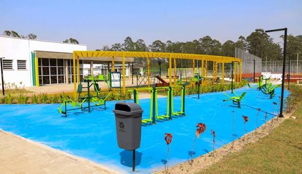

Parque Ayrton Nogueira

Sobre o local
O Parque Ayrton é o mais recente parque inaugurado em Mogi das Cruzes, com diversos espaços esportivos, aparelhos de treino corporais, pistas de ciclismo e diversos eventos regionais.
"O parque onde todos têm seu lugar!"
Informações
Funcionamento e avaliação do parque
| Item | Detalhe | Observação |
|---|---|---|
| Funcionamento | Todos os dias | 7h às 22h |
| Entrada | Gratuita | Acesso Livre |
| Avaliação Média | 4,4 de 5 | 213 Avaliações |
Atualizado em setembro de 2026
Comodidades
- Pista de caminhada e ciclovia
- Brinquedos infantis
- Lanchonete e carrinhos de pipoca
- Sanitários e bebedouros
Próximos eventos
Maratona 70°tão
Corrida focada no público com a idade de 70+
- Data: sábado, 30 de fevereiro
- Horário: 14h às 18h
- Entrada gratuita